01 / Service
Product Design
End-to-end product work: research, flows, interfaces and prototypes, from the first question to developer handoff.
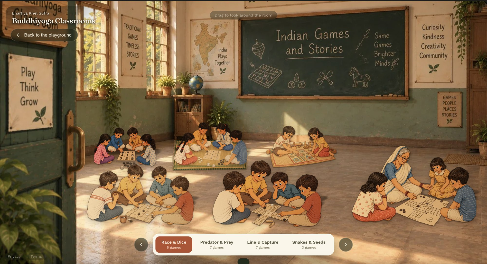
Curiosity first. Then form, colour, rhythm and detail, until an idea becomes something you can feel.
I believe design can turn curiosity into experiences that people feel, understand, and remember.
Capabilities & tools
01 / Service
End-to-end product work: research, flows, interfaces and prototypes, from the first question to developer handoff.
02 / Service
Branding systems built with clarity, restraint and emotional intent.
03 / Service
Print and digital layouts that communicate quietly yet effectively: books, covers, posters and collateral, built on a clear grid and prepared for press.
04 / Tools
Tools I work in
Bhartiya Khel Sutra
Case study · Client project
Play traditions of India. A digital archive of 75+ traditional games, designed as a place you walk through, not a list you search.
The clickable prototype, a 40-second walkthrough.
01 — The challenge
Khol Khel had documented games from across India: rules, lineages, regional variants. Some entries are two lines, others carry centuries of evidence. A list or a product grid would flatten all of it.
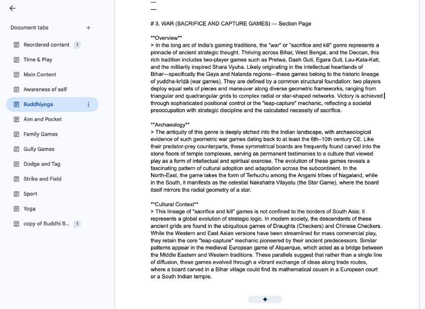
02 — Structure
I turned a research spreadsheet into a taxonomy. Each game gets two coordinates: an intellectual genre and a physical place. The place becomes the navigation.
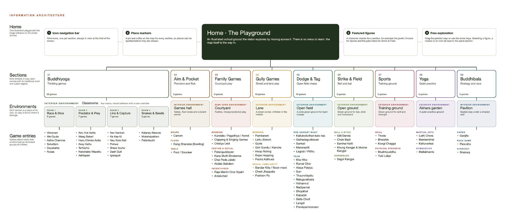
03 — Interaction
Two ways in, one structure. Drag across the playground and a pin opens a game; a zone opens as its own room. Or go straight to Find a game, for the teacher who needs a title now.
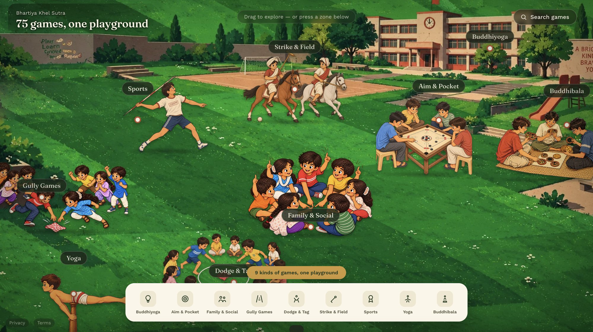
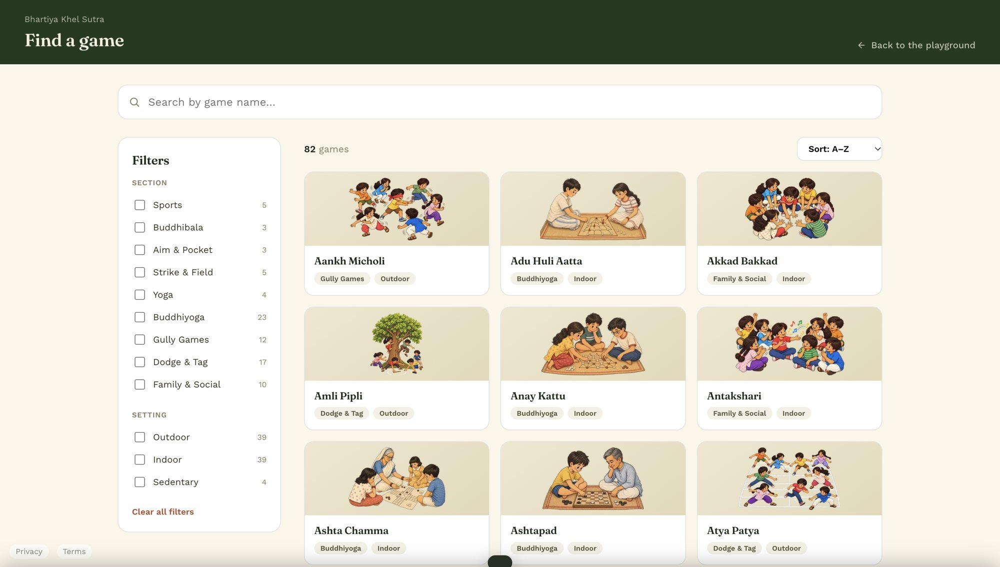
04 — The world
Every zone is an illustrated environment, and games stand where they would be played. One tab bar sits along the bottom, so moving between genres never reloads the scene.
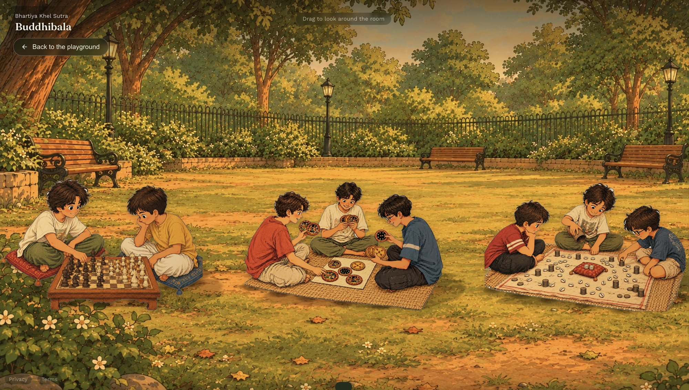
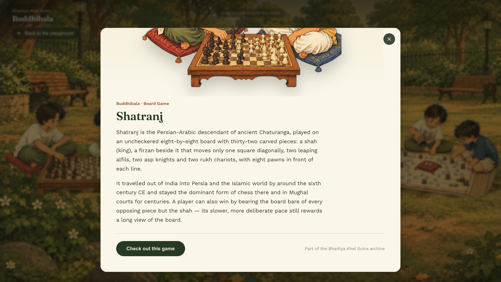
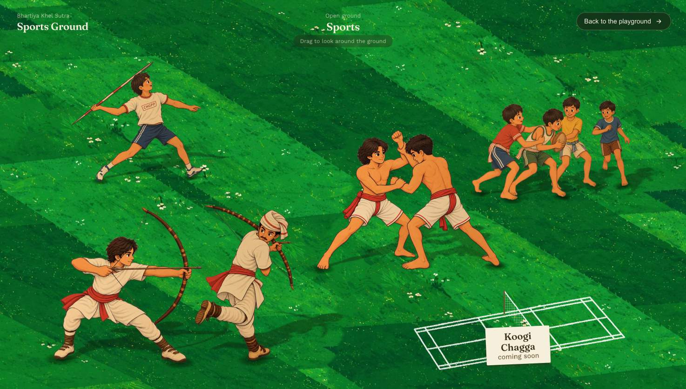
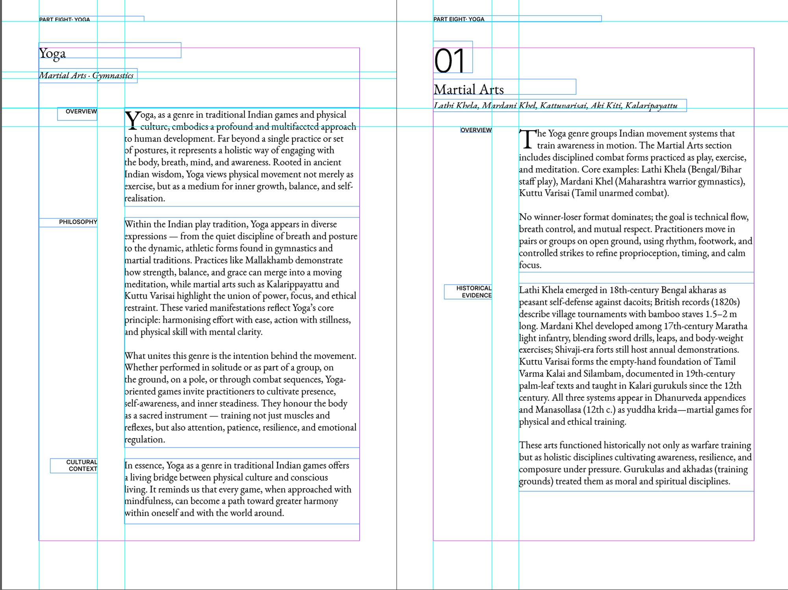
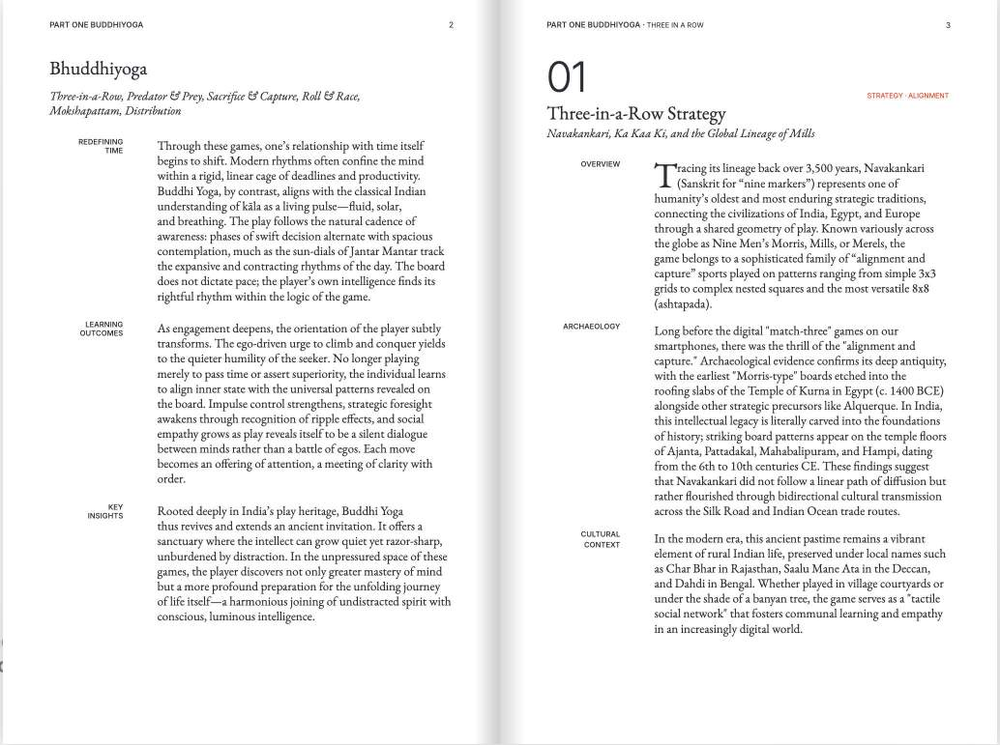
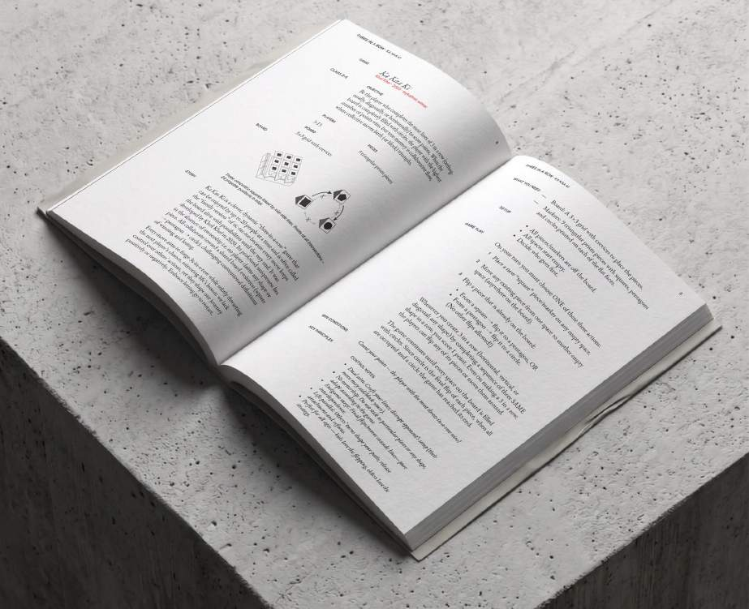
05 — Editorial
The research behind each game was also typeset as a rulebook in InDesign: part openers, a narrow margin for labels, one grid under every game page.
06 — Iterations
Feedback came in rounds. Most changes removed something instead of adding it.
Tried a right-edge hover drawer. Feedback: worse. Went back to the bottom dock.
Removed. The tab bar already says where you are, and it fixed unreadable text on two zones.
Moved left on every zone page, matching the homepage.
Measured every illustration's bounds and re-plotted until nothing touched.
The rest of the portfolio continues here.
Next: Echo Music, MyDayss and UniPath.